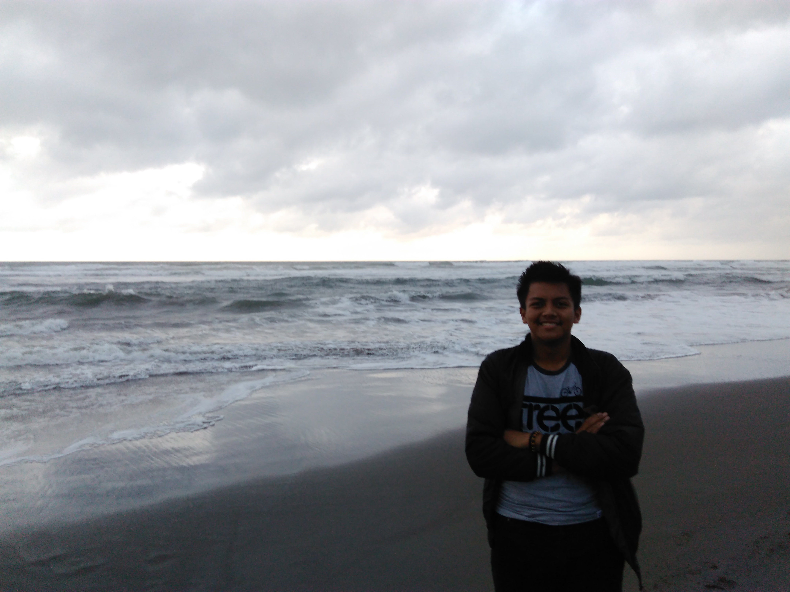

Galeri Ku

Pantai Cidora Garut
Pantai Santolo Garut

Tebing Keraton

Gunungkidul Yogyakarta

Mahasiswa | STMIK IM | Teknik Informatika | Gaming | Travellers
Saya lahir di Bandung pada tanggal 07 Oktober 1999. Saat ini saya adalah mahasiswa berasal dari STMIK Indonesia Mandiri jurusan Teknik Informatika dan akan menempuh semester 7. Saya memiliki keahlian dalam bidang Computer Networking, memiliki pengetahuan mengenai jaringan LAN, Routing & Switching, TCP/IP, Network Administration, dan Troubleshooting.
Selain pengetahuan saya mengenai sistem jaringan komputer. Saat ini saya juga sedang menekuni bidang Web Development dan sedang mempelajari pemrograman PHP, javascript, Python dan juga mempelajari Framework untuk pengembangan sebuah website. Motivasi saya dalam mempelajari Web Development adalah untuk menjadi seorang Web Developer handal yang dapat mengembangkan sebuah situs website.